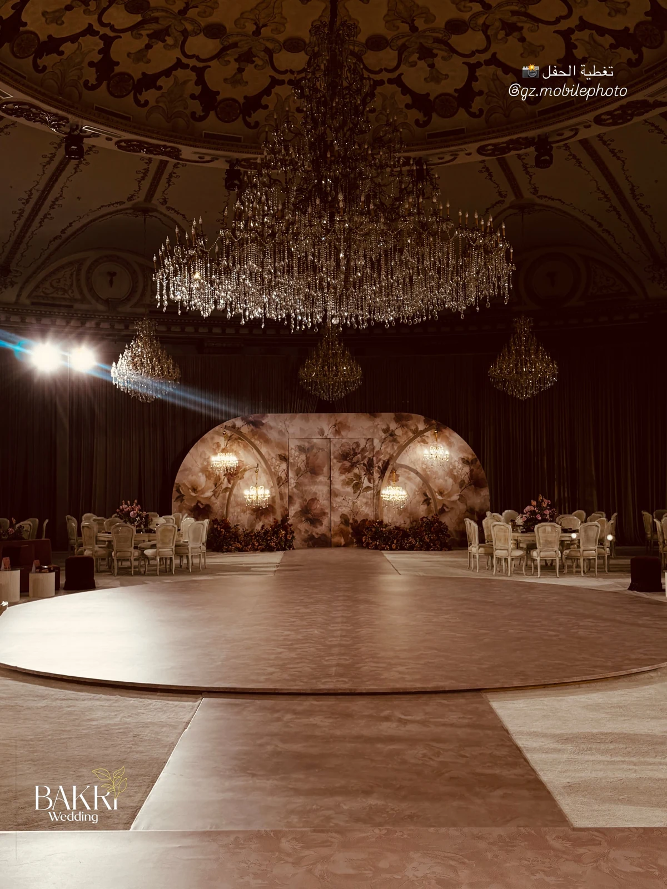
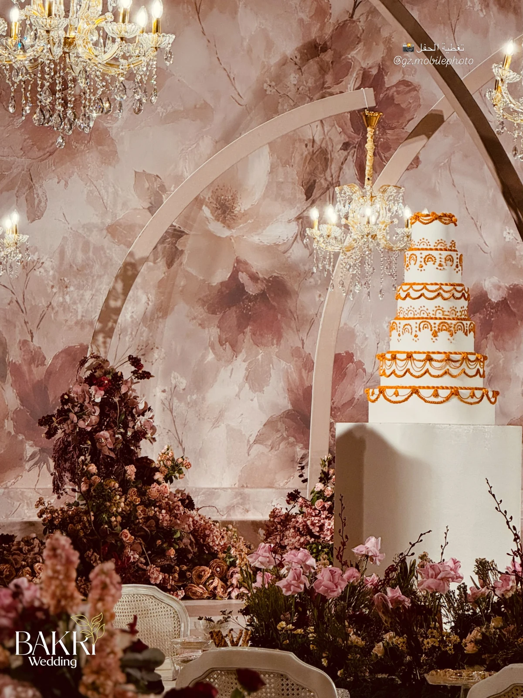
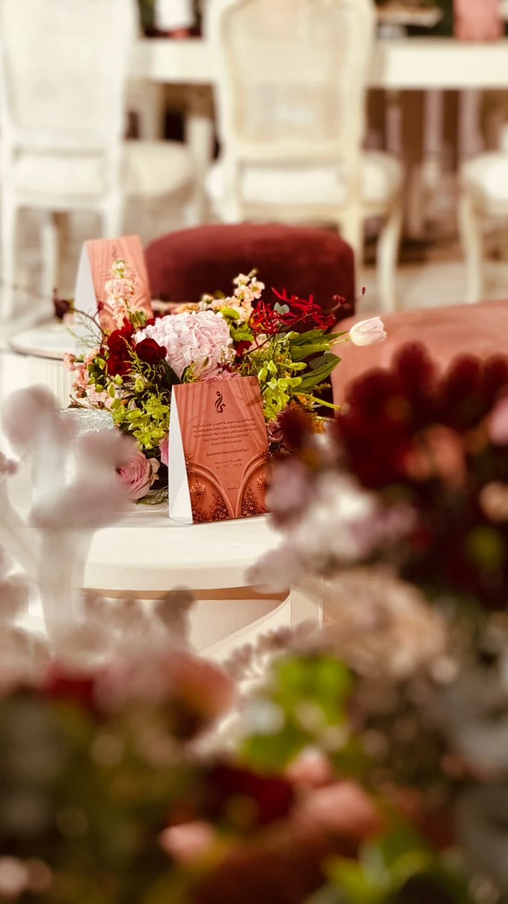

تصميم الكوش
تطوير شكل الكوشة والألوان والعناصر الزهرية بما ينسجم مع القاعة وفكرة الزفاف.
جدة ومناطق المملكة
تصميم كوش وتنسيق حفلات زفاف في جدة ومناطق المملكة. من ملامح التصوّر إلى تفاصيل القاعة والزهور.


زهور، ضوء،
وتفاصيل تكتمل معًا.

الخدمات والتفاصيل
بكري ويدينق لتصميم الكوش وتنظيم الحفلات في مناطق المملكة. يجمع حسابه بين صور التنسيق وتصوّرات التصميم؛ من الأعمال المنشورة في قاعتي دنيتي وليلتي. صور من تغطيات gz.mobilephoto وelegant.weddings_ كما ورد في المنشورات الأصلية.
تطوير شكل الكوشة والألوان والعناصر الزهرية بما ينسجم مع القاعة وفكرة الزفاف.
توزيع عناصر الاحتفال والممرات والطاولات والزهور لتكوين مشهد متكامل.
نماذج منشورة لمخططات وتصورات ثنائية وثلاثية الأبعاد تساعد في مناقشة التفاصيل قبل التجهيز.
المعرض
نماذج مختارة من صور النشاط المنشورة. اختر التصنيف وافتح الصورة لمشاهدة التفاصيل. تصوّرات التصميم مصنّفة بصورة مستقلة عن صور التنسيق. حقوق الصور لمصوريها وفق المنشورات الأصلية.
6 صور في المعرض
بداية أوضح
جهّز هذه المعلومات لتبدأ المحادثة مع الفريق بصورة واضحة عن احتياجك.
قبل التواصل
نعم؛ صور التنسيق منفصلة بتصنيفها عن التصوّر الثلاثي الأبعاد المنشور، حتى يكون الفرق واضحًا.
القاعة ومساحتها والعدد والتاريخ والعناصر المطلوبة. اتفقوا على مخطط ونطاق تجهيز وتسعير واضح قبل الاعتماد.
اختر الخدمة وأضف التفاصيل التي تساعد الفريق على فهم طلبك. ستظهر لك رسالة جاهزة للمراجعة قبل فتح واتساب.
جدة ومناطق المملكة
+966508683998